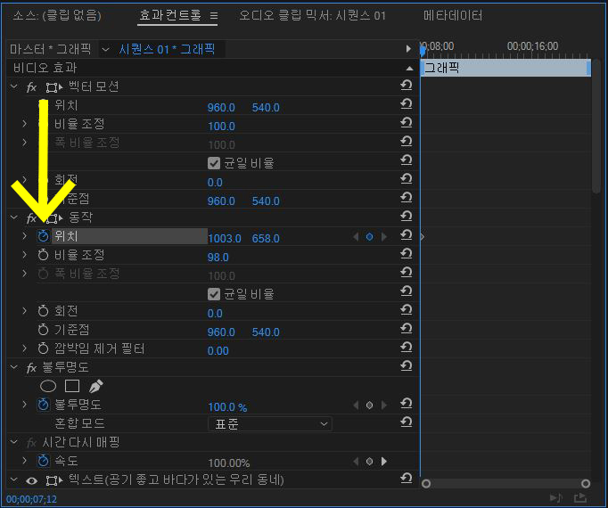
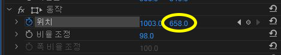
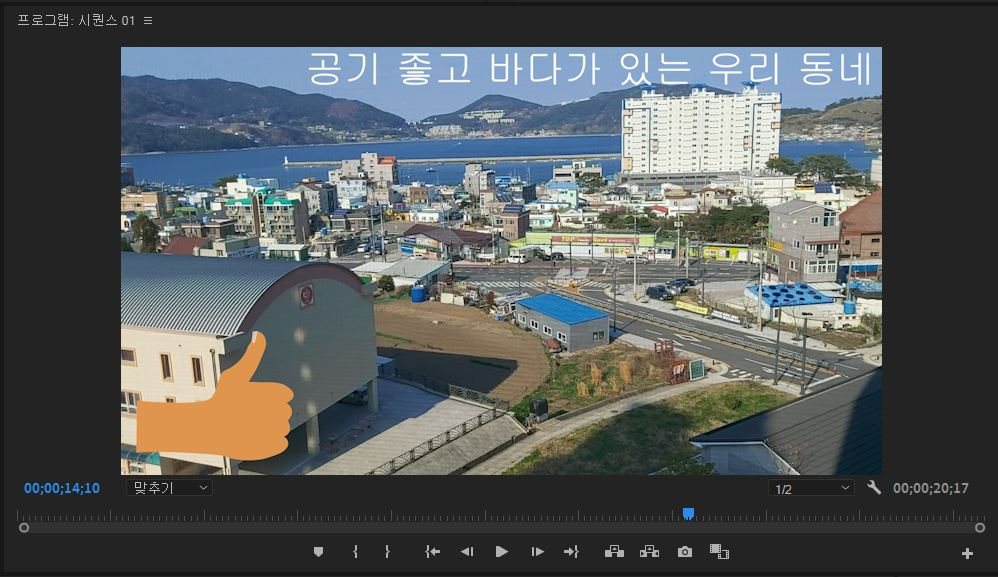
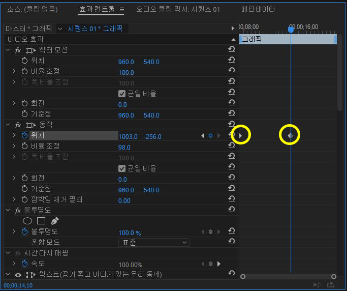

애니메이션 사용하기
이번에는 애니메이션에 대해 배워봅시다.
애니메이션을 배우면 영상이나 사진, 자막 등을
움직이거나 변하게 할 수 있습니다.
저는 자막에 애니메이션을 넣어 보갰습니다.
자막 블럭을 선택해주고 효과 컨트롤 창으로 가줍니다.
오른쪽에 있는 타임라인이 바로 애니메이션을 적용하는 곳입니다.
타임라인은 선택한 블럭의 재생 시간만큼 보여집니다.
먼저 앞에서 배웠던 효과컨트롤의 위치와 비율 조정을 이용해
자막을 원하는 위치에 둡니다.
그 다음 옆 타임라인의 파란색 선(재생헤드)를 처음으로 옮겨줍니다

그리고 저는 위치를 바꾸는 애니메이션을 넣어 줄 것이므로
위치 옆에 시계 모양을 눌러줍니다.
그 다음 재생헤드를 뒷 부분으로 이동 시켜준 후
위 아래 위치를 조정하는 이 부분을 이용해
자막을 여기까지 올려주도록 하겠습니다.
이렇게 사진처럼 다이아몬드 표시가 두개 생기고 그 사이에 애니메이션이 생겨납니다.
영상을 재생해보면 자막이 위로 점점 올라가게 됩니다.
프리미어에서 모든 애니메이션은 이렇게 만들 수 있습니다.
수동으로 직접 만들어 줘야 해서 힘들긴 하지만
내가 원하는 애니메이션을 만들수 있다는 장점이 있죠.
다음은 '마스크 사용하기'입니다.